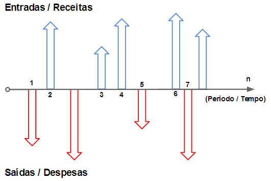

1 Introdução à Finanças Corporativas
Bem-vindos à disciplina de Finanças Corporativas (I) de Curto Prazo (FCCP)! Essa seção introdutória tem como objetivo fornecer uma visão geral da disciplina FCCP no contexto da área de finanças. Também vamos discutir a relação risco-retorno em finanças. Essas duas frentes perfazem nosso primeiro módulo da disciplina, e a leitura básica, geralmente, encontra-se em capítulos iniciais de manuais (livros-textos) de finanças, tal como nossa bibliografia: Capítulo 1 do Assaf Neto (2014) e do Gitman (2010) e, complementarmente, também o Capítulo 1 do Ross et al. (2015).
Cabe ressaltar que as teorias de finanças, conforme nossa ementa oficial, tal como Teoria de Agência, Utilidade, etc., vamos tratar mais detalhadamente nos Projetos em Grupo ao final do curso.
1.1 O que são Finanças e Finanças Corporativas?
Finanças: É a área que estuda como pessoas, empresas e governos administram seus recursos financeiros ao longo do tempo. Envolve tomar decisões sobre como obter, gastar e investir dinheiro.
Finanças Corporativas: Focam especificamente nas decisões financeiras das empresas. O objetivo principal é tomar decisões que aumentem o valor da empresa para seus proprietários (acionistas).
As Grandes Decisões Financeiras das Empresas:
As empresas enfrentam continuamente os seguintes tipos principais de decisões financeiras:
Decisão de Investimento: Onde a empresa deve aplicar seus recursos? (Ex: comprar novas máquinas, lançar um novo produto).
Decisão de Financiamento: Como a empresa vai obter os recursos para seus investimentos? (Ex: usar lucros próprios, pegar empréstimos, vender ações).
Decisão de Capital de Giro: Como gerenciar os recursos do dia a dia da empresa? (Ex: administrar caixa, contas a receber de clientes, estoques, contas a pagar a fornecedores). Este é o foco principal da nossa disciplina!
Curto Prazo vs. Longo Prazo em Finanças:
Finanças de Curto Prazo: Lidam com decisões e recursos que afetam a empresa geralmente em um período de até um ano. O foco é na liquidez (capacidade de pagar as contas em dia) e na eficiência das operações diárias. É aqui que se encaixa a gestão do capital de giro.
Finanças de Longo Prazo: Envolvem decisões estratégicas com impacto em vários anos, como grandes investimentos. A forma como a empresa se financia a longo prazo e como ela planeja seu crescimento.
| Critério de Comparação | Finanças de Curto Prazo | Finanças de Longo Prazo |
|---|---|---|
| Horizonte Temporal | Tipicamente até um ano; foco no ciclo operacional. | Geralmente mais de um ano; foco no crescimento e na estratégia de longo prazo. |
| Decisões Chave | Gestão de caixa, contas a receber, estoques, financiamento de curto prazo. | Orçamento de capital (investimentos em ativos fixos), estrutura de capital, política de dividendos. |
| Ativos e Passivos Gerenciados | Ativos Circulantes (caixa, bancos, clientes, estoques) e Passivos Circulantes (fornecedores, empréstimos de curto prazo). | Ativos Não Circulantes (imobilizado, intangível, investimentos) e Passivos Não Circulantes e Patrimônio Líquido. |
| Riscos Típicos | Risco de liquidez (incapacidade de pagar obrigações), risco operacional. | Risco de investimento (projeto não gerar o retorno esperado), risco estratégico, risco financeiro (endividamento). |
| Objetivos Primários | Garantir solvência, financiar o ciclo operacional, otimizar a liquidez e a rentabilidade dos ativos circulantes. | Maximizar o valor da empresa, promover o crescimento sustentável, otimizar a estrutura de capital. |
1.2 Finanças Corporativas de Curto Prazo
Nesta disciplina, vamos nos aprofundar na gestão do capital de giro. Isso significa aprender a gerenciar de forma eficiente:
Caixa: Garantir que a empresa tenha dinheiro suficiente para suas necessidades, mas sem excessos improdutivos.
Contas a Receber: Administrar o crédito concedido a clientes para maximizar as vendas, minimizando o risco de não receber.
Estoques: Manter níveis adequados de mercadorias ou matérias-primas para atender à demanda, sem gerar custos excessivos de armazenagem ou perdas.
Financiamento de Curto Prazo: Escolher as melhores formas de financiar as necessidades de curto prazo da empresa (ex: empréstimos bancários, crédito de fornecedores).
Vídeo sobre o Tema
A relação risco-retorno é um conceito fundamental em finanças. De um modo informal, talvez você já espera o que vamos dizer: quanto maior o risco, maior o retorno esperado. Mas vamos melhorar essa afirmação, pois ela não está totalmente correta. No vídeo abaixo, vamos explicar essa dinâmica e como ela se aplica às nossas decisões econômicas. Na sequência, temos um resumo da mensagem principal do vídeo na forma de um texto descritivo.
Esse vídeo foi gravado, primordialmente, para a disciplina de Matemática Financeira, mas é muito relevante para a nossa disciplina de FCCP, tanto que, é o primeiro tópico da ementa oficial da disciplina. Não poderíamos deixar de incluí-lo aqui!
1.3 Relação Risco-Retorno em Finanças
Finanças, em sua essência, podem ser compreendidas como a ciência da tomada de decisão sob condições de incerteza. Cada escolha financeira, desde um investimento pessoal de pequena escala até uma grande aquisição corporativa, gira em torno de uma relação central: o trade-off entre o potencial de ganho (retorno) e a exposição à perda (risco). Este texto se propõe a discutir o conceito de custo de oportunidade e valor do dinheiro no tempo.
1.3.1 Renda Fixa vs. Imóveis
Para introduzir os conceitos centrais de forma tangível, a análise parte de um dilema de investimento comum: a escolha entre um ativo financeiro, como um título de renda fixa, e um ativo real, como um imóvel.
1.3.1.1 A Natureza dos Retornos: Rendimentos Previsíveis vs. Ganhos Originários
A primeira distinção fundamental entre os dois tipos de investimento reside na natureza e previsibilidade de seus retornos.
No caso da renda fixa, o retorno primário são os juros. Este é um fluxo de rendimentos contratualmente definido e, portanto, altamente previsível. Um investidor que adquire um título do Tesouro Direto ou um Certificado de Depósito Bancário (CDB) sabe, desde o início, a fórmula ou a taxa que determinará seus ganhos futuros, conferindo um alto grau de certeza ao fluxo de caixa esperado.
Em contrapartida, os retornos de um imóvel são mais incertos. O primeiro componente é a receita de aluguel, que é economicamente análoga aos juros, pois representa um fluxo de caixa periódico. No entanto, está sujeita a um grau de incerteza maior. O segundo componente, que frequentemente constitui a principal motivação para o investimento, é o ganho de capital, ou seja, a valorização do preço do imóvel ao longo do tempo.
Esta dualidade no perfil de retorno do imóvel é uma fonte primária de sua complexidade e risco. O investidor precisa gerir uma receita operacional potencialmente imprevisível (o aluguel), enquanto aguarda um ganho de capital especulativo e de longo prazo que não é garantido. A expectativa de que “o imóvel vai valorizar” é um motor poderoso, mas introduz um elemento de especulação que está largamente ausente em um título de renda fixa simples.
1.3.1.2 O Panorama do Risco: Garantias, Volatilidade e Custos Ocultos
A análise das características de risco aprofunda a distinção entre os dois ativos, revelando que o risco em um investimento imobiliário vai muito além da simples volatilidade de preços.
Garantias de Crédito e Inadimplência: Muitos produtos de renda fixa, como os CDBs, são protegidos pelo Fundo Garantidor de Crédito (FGC). Este mecanismo, mantido pelo sistema financeiro, funciona como um seguro que protege o capital do investidor até um determinado limite (atualmente R$ 250.000 por CPF por conglomerado financeiro) em caso de quebra da instituição emissora, sem custo direto para o investidor. Um imóvel não possui tal salvaguarda institucional. Se um investidor desejar proteção contra riscos como incêndio ou outros danos, ele deve adquirir apólices de seguro privadas, o que representa um custo explícito e contínuo.
Custos Operacionais e de Manutenção: Um ativo financeiro, por sua natureza intangível, possui custos de manutenção mínimos ou inexistentes. Um ativo físico como um imóvel, no entanto, está sujeito à depreciação natural e exige custos de manutenção recorrentes. Esses custos podem ser imprevisíveis e substanciais, como reparos necessários após a saída de um inquilino, podendo consumir o equivalente a meses ou até um ano de aluguel.
Custos de Transação e Administração: A compra e venda de imóveis envolve altos custos de transação, como impostos (ITBI), taxas de cartório e comissões de corretagem. Além disso, se o proprietário optar por uma gestão profissional para mitigar os riscos de locação, incorrerá em taxas administrativas, que podem corresponder a cerca de 10% do valor do aluguel. Esses custos reduzem diretamente o retorno líquido do investimento.
Confiabilidade do Fluxo de Caixa: Um ponto crucial de divergência é o risco de interrupção do fluxo de caixa. Títulos do governo ou de empresas de alta qualidade de crédito possuem uma probabilidade de pagamento extremamente alta. O investimento imobiliário, por outro lado, está exposto ao risco de vacância (períodos em que o imóvel fica desocupado) e ao risco de inadimplência por parte dos inquilinos. Mesmo com a intermediação de uma imobiliária, que pode ajudar a selecionar inquilinos com menor risco de crédito, a perda financeira decorrente da inadimplência ou da vacância é, em última instância, suportada pelo proprietário.
1.3.1.3 Papel Crítico da Liquidez: A Facilidade de Conversão em Dinheiro
A liquidez é uma das características diferenciadoras mais importantes entre classes de ativos e é formalmente definida como a capacidade de um ativo ser convertido em dinheiro rapidamente e sem perda significativa de valor.
Ativos de renda fixa são, em geral, altamente líquidos. Muitos títulos podem ser vendidos no mercado secundário, e o investidor pode ter acesso aos seus fundos em questão de dias, com pouco ou nenhum impacto no preço, especialmente para ativos de curto prazo ou com alta demanda. A caderneta de poupança, embora com rendimento baixo, é um exemplo extremo de liquidez, onde o resgate é imediato.
O imóvel, por sua vez, é um ativo fundamentalmente ilíquido. A conversão de um imóvel em dinheiro é um processo que pode levar meses. Para vender uma propriedade rapidamente (por exemplo, em poucos dias), o proprietário provavelmente precisaria oferecer um desconto substancial em relação ao valor de mercado, incorrendo assim em uma perda significativa de valor.
Essa característica não é apenas um inconveniente; é uma forma potente de risco. A iliquidez representa a perda de flexibilidade. Ela aprisiona o capital, impedindo o investidor de aproveitar outras oportunidades de investimento mais atrativas que possam surgir ou de responder a emergências financeiras sem incorrer em perdas substanciais. Portanto, a falta de liquidez traduz-se diretamente num custo de oportunidade e num risco financeiro real.
1.3.1.4 A Previsibilidade do Valor Futuro
A dimensão final da comparação reside na previsibilidade do valor do ativo no futuro.
Para a renda fixa, o valor futuro é altamente previsível. Os termos (taxa, prazo) são definidos no momento da aplicação. Assumindo que o ativo seja mantido até o vencimento e que o emissor seja solvente, o investidor sabe com um alto grau de certeza qual será o retorno obtido.
Para o imóvel, o valor futuro é marcadamente especulativo. Embora exista uma expectativa geral de que os preços dos imóveis aumentem no longo prazo devido à escassez de terra, essa tendência não é uma garantia, especialmente nos curto e médio prazos. A história econômica está repleta de períodos de estagnação ou queda nos mercados imobiliários, como a crise de 2008 nos EUA ou ciclos de baixa no Brasil, onde imóveis chegaram a desvalorizar 20% em um único ano. Um investidor que compra um imóvel esperando um ganho de capital em um horizonte de um ou dois anos pode, na verdade, enfrentar uma perda.
Análise Comparativa de Renda Fixa e Imóveis
A tabela a seguir sintetiza a análise detalhada, oferecendo uma referência visual clara das diferenças fundamentais entre os dois tipos de investimento.
| Característica | Renda Fixa (ex: CDB) | Imóvel (Residencial) |
|---|---|---|
| Perfil de Retorno | Primariamente Juros | Receita de Aluguel & Ganhos de Capital |
| Previsibilidade do Retorno | Alta (Contratualmente definida) | Baixa (Dependente do mercado, inquilino) |
| Garantia de Inadimplência | FGC (até o limite, sem custo direto) | Inexistente (Requer seguro privado custoso) |
| Liquidez | Alta (Facilmente convertível em dinheiro) | Muito Baixa (Venda lenta sem perda de valor) |
| Custos de Manutenção | Insignificantes | Significativos e contínuos |
| Previsibilidade do Fluxo de Caixa | Muito Alta (Pagamentos previsíveis) | Moderada a Baixa (Risco de vacância/inadimplência) |
| Perfil de Risco Geral | Menor | Maior |
1.4 O Cálculo da Escolha Racional
Tendo estabelecido que os ativos possuem perfis de risco e retorno distintos, o próximo passo é formalizar o processo de decisão para um investidor “racional”.
1.4.1 O Princípio da Dominância: Identificando Investimentos Superiores
A análise transita do exemplo específico para um quadro geral, utilizando uma comparação entre três ativos hipotéticos: A, B e C. Este quadro permite isolar as variáveis de risco e retorno para estabelecer regras claras de decisão.
Cenário 1 (Mesmo Risco, Retorno Diferente): Considere o Ativo A (Risco X, Retorno 10%) e o Ativo C (Risco X, Retorno 15%). Um investidor racional sempre escolherá o Ativo C. Por oferecer um retorno maior para o mesmo nível de risco, o Ativo C domina o Ativo A. A escolha do Ativo A seria ilógica.
Cenário 2 (Mesmo Retorno, Risco Diferente): Agora, compare o Ativo B (Risco Y, Retorno 15%) e o Ativo C (Risco X, Retorno 15%), onde o Risco Y é maior que o Risco X. Um investidor racional sempre escolherá o Ativo C. Por oferecer o mesmo retorno com um nível de risco inferior, o Ativo C também domina o Ativo B.
É crucial notar que todas essas decisões são baseadas em risco esperado e retorno esperado (E(Risco), E(Retorno)). A máxima popular “quanto maior o risco, maior o retorno” é uma simplificação perigosa. A formulação correta é: um maior retorno esperado é exigido como compensação por um maior risco percebido.
O resultado final não é garantido. A teoria se aplica às expectativas ex-ante (antes do fato), e não às realizações ex-post (depois do fato). O fato de que o futuro pode se desenrolar de forma inesperada — por exemplo, um ativo de baixo risco superando um de alto risco em um determinado período — não invalida a racionalidade da decisão inicial, que foi tomada com base na melhor informação disponível no momento.
1.4.2 O Prêmio pelo Risco
A comparação entre o Ativo A (Risco Menor X, Retorno Menor 10%) e o Ativo B (Risco Maior Y, Retorno Maior 15%) apresenta um verdadeiro trade-off, onde nenhum ativo domina o outro. Aqui, o investidor enfrenta uma escolha genuína: aceitar mais risco para buscar um retorno maior, ou optar pela segurança de um retorno menor.
A diferença entre seus retornos esperados (15% - 10% = 5%) é o prêmio pelo risco. Ele representa o retorno adicional que um investidor exige para ser convencido a assumir o risco adicional do Ativo B em relação ao Ativo A. A escolha entre A e B não é uma questão de lógica pura, mas de preferência individual ao risco, ou “perfil de investidor”. Um investidor conservador pode preferir o Ativo A, enquanto um mais agressivo pode optar pelo Ativo B. Ambas as escolhas podem ser consideradas racionais, pois refletem diferentes apetites por risco.
1.5 Custo de Oportunidade
1.5.1 Uma Definição “Mais” Precisa
O custo de oportunidade é revelado através da comparação entre o Ativo A (dominado) e o Ativo C (dominante). Se um investidor, confrontado com ambos, escolhe o Ativo A (Risco X, Retorno 10%) em vez do Ativo C (Risco X, Retorno 15%), o custo de sua decisão não é nulo. O custo de oportunidade é o valor da melhor alternativa preterida entre opções com um perfil de risco comparável. Neste caso, o custo de oportunidade de investir em A é o retorno de 15% que poderia ter sido obtido em C. O custo líquido é o retorno de 5% sacrificado.
A frase-chave na definição é “de igual risco”. Só se pode falar de custo de oportunidade de forma rigorosa quando se comparam alternativas com níveis de risco semelhantes. Esta definição precisa é uma ferramenta analítica poderosa que desmascara um erro financeiro comum: a comparação de retornos de ativos com perfis de risco drasticamente diferentes.
Por exemplo, é comum justificar um investimento imobiliário se seu rendimento de aluguel for superior ao da caderneta de poupança. No entanto, como demostramos anteriormente, o imóvel carrega riscos significativamente maiores (iliquidez, manutenção, vacância, etc.). Como os riscos não são iguais, a comparação é fundamentalmente falha. O retorno do imóvel não deve ser comparado com o de um ativo de baixo risco, mas sim com o retorno esperado de outro investimento com um perfil de risco igualmente equiparável (por exemplo, um fundo imobiliário ou outro empreendimento imobiliário).
1.6 A Taxa de Juros e o Valor do Dinheiro no Tempo
1.6.1 A Taxa de Juros como o Custo de Oportunidade do Dinheiro
A taxa de juros (\(i\)) é apresentada como o “insumo principal das finanças”. Ela representa o custo de oportunidade de deter dinheiro. Ao manter dinheiro em contas correntes, um indivíduo ou empresa abre mão do retorno que poderia ter obtido ao investi-lo, mesmo que no ativo de menor risco disponível (como um título do governo). A taxa de juros é, portanto, o “preço do dinheiro”, a compensação exigida para adiar o consumo e abrir mão da liquidez imediata.
1.6.2 O Valor do Dinheiro no Tempo
O princípio fundamental de que “dinheiro tem valor no tempo” é explicado por dois fatores principais:
- Inflação: Com o tempo, o aumento geral dos preços corrói o poder de compra da moeda. R$ 1.000 hoje compram uma quantidade maior de bens e serviços do que os mesmos R$ 1.000 comprarão daqui a um ano. Para manter o poder de compra, o dinheiro precisa ser remunerado a uma taxa que, no mínimo, compense a inflação.
- Custo de Oportunidade: R$ 1.000 hoje podem ser investidos para se tornarem mais de R$ 1.000 no futuro. Por exemplo, se aplicados a uma taxa de 6% ao ano, tornar-se-ão R$ 1.060. Para que um agente econômico seja indiferente entre receber dinheiro agora e recebê-lo mais tarde, ele deve ser compensado por esse potencial de ganho perdido. Essa compensação é a taxa de juros.
Essa secção equipa o estudante com o vocabulário básico, a notação e as convenções necessárias para as análises quantitativas que se seguirá nos conteúdos subsequentes.
Variáveis Centrais e a Equação Fundamental
- M (Montante): Valor Futuro (VF ou FV)
- C (Capital): Valor Presente (VP ou PV)
- J (Juros): Rendimento do capital
- i (taxa de juros): Taxa por período
- n (período): Prazo
Equações:
M = C + Je, para o regime de juros simples:
M = C × (1 + i × n)Essas fórmulas traduzem o raciocínio de que o valor final de um investimento (montante) é igual ao valor inicial (capital) acrescido dos juros ganhos sobre ele durante o período.
Visualizando Investimentos
O diagrama de fluxo de caixa, ou linha do tempo, é a ferramenta padrão para representar visualmente problemas financeiros. O tempo (n) é representado em um eixo horizontal, e os fluxos de dinheiro são representados por setas verticais. A convenção universal é a seguinte:
Saídas de caixa: Representam investimentos feitos, pagamentos ou qualquer desembolso de dinheiro. São indicadas por uma seta para baixo ou por um valor negativo.
Entradas de caixa: Representam retornos recebidos, resgates ou qualquer recebimento de dinheiro. São indicadas por uma seta para cima ou por um valor positivo.

Convenções e Distinções Essenciais
Para aplicar corretamente as ferramentas da matemática financeira, algumas convenções e distinções são cruciais.
Perspectiva de Caixa vs. Contabilidade: Uma distinção fundamental deve ser feita entre a base de caixa da análise financeira e a base de competência da contabilidade. A contabilidade pode reconhecer uma receita ou lucro no momento em que a venda é realizada (emissão da nota fiscal), mesmo que o pagamento só ocorra meses depois. A matemática financeira, por outro lado, se preocupa com o momento em que o dinheiro efetivamente entra ou sai do caixa. Isso ocorre porque o dinheiro tem valor no tempo. Um lucro de R$ 20 registrado hoje, mas cujo caixa só será recebido em 90 dias, não tem o mesmo valor que R$ 20 em caixa hoje, pois o dinheiro imediato poderia ser reinvestido. Portanto, o fluxo de caixa, e não o lucro contábil, é o insumo fundamental para a avaliação financeira.
Alinhamento entre Taxa e Período: A taxa de juros (\(i\)) deve sempre ser especificada com uma unidade de tempo (ex: 2% ao mês, 10% ao ano). Não existe “taxa de 2%”. Nas fórmulas financeiras, a taxa (\(i\)) e o período (\(n\)) devem estar expressos na mesma unidade de tempo. Se a taxa é mensal, o período deve ser medido em meses.
Forma Unitária nos Cálculos: Embora as taxas sejam comumente discutidas em formato percentual (ex: 12%), elas devem ser inseridas nas equações em sua forma unitária (decimal). Uma taxa de 12% ao ano entra na fórmula como 0,12. Esquecer essa conversão é uma fonte comum de erros para iniciantes e deve ser evitado rigorosamente.
Conclusão
Nesta seção, introduzimos os conceitos fundamentais de finanças corporativas, com foco na relação risco-retorno. Discutimos como as decisões financeiras são tomadas em um ambiente de incerteza e como o custo de oportunidade e a taxa de juros influenciam essas decisões. A compreensão desses princípios é essencial para a boa gestão das finanças de curto prazo de uma empresa.
Abaixo, você encontrará outros recursos didáticos que objetiva resumir os conceitos apresentados por aqui: